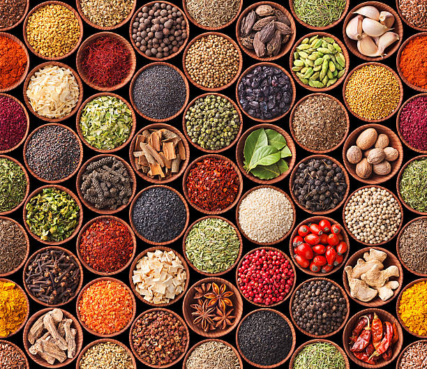

Condiments

-
Carbohydrate Content: Condiments vary widely; ketchup and
barbecue sauce can contain 4-7 grams of carbs per tablespoon due to
added sugars, while mustard, hot sauce, and mayonnaise often have
minimal to no carbs.
-
Low-Carb Options: Sugar-free versions of ketchup, dressings, and
sauces can reduce carb content significantly.